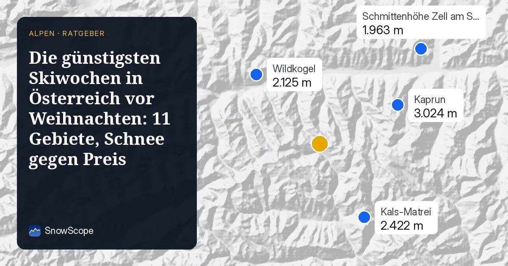

Die günstigsten Skiwochen in Österreich vor Weihnachten: 11 Gebiete, Schnee gegen Preis
Die kurze Antwort: Die preiswertesten Dezemberwochen in Österreich liegen in den hohen Orten, nicht auf den Gletschern. Galtür (258 EUR für 6 Tage bis 18. Dezember) und Kühtai (269 EUR bis 18. Dezember) hatten beide in der Woche vom 15. bis 21. Dezember in über 90 % unserer 46 Winter mindestens 30 cm an der Mittelstation.
Die Live-Schneeprognose für Cheapest ski weeks in Austria before Christmas in der SnowScope-AppSchneehöhen, Pulverschnee-Alarme und 3D-Karte, gratis.
Wie wir verglichen haben
Wir haben 11 österreichische Skigebiete genommen, die im Dezember hoch genug sind, und zwei Dinge betrachtet. Erstens den Schnee: den Anteil der Winter mit mindestens 30 cm an der Mittelstation in der Woche vom 15. bis 21. Dezember und denselben Anteil für die Weihnachtswoche der letzten 15 Winter. Zweitens den 6-Tage-Skipass für Erwachsene laut offizieller Preisliste, mit dem günstigeren Vorsaisonpreis, wo es einen gibt. Die Nummern auf der Karte entsprechen der Liste unten.

Die Gewinner: hohe Orte mit Nebensaison
Kühtai (2) ist der Schneemeister unter den Orten: Der tiefste Lift steht auf 1939 m, die Mittelstation hatte Mitte Dezember in 98 % der Winter 30 cm, und der 6-Tage-Skipass kostet in der Nebensaison bis 18. Dezember 269 EUR. Galtür (3) ist mit 258 EUR bis 18. Dezember die günstigste Woche dieser Liste, mit 93 % der Winter bei 30 cm an der Mittelstation.
Obertauern (1) ist größer und kostet mehr, 331 EUR für 6 Tage bis 25. Dezember, mit 80 % der Winter bei 30 cm Mitte Dezember. Alle drei haben dieselbe Stärke: Du fährst direkt vom Haus weg und brauchst kein Gletscherticket.
Die Sicheren: Gletscher, mit Preis
Die Gletscher sind an der Mittelstation Mitte Dezember fast sicher: Der Mölltaler Gletscher (8), das Pitztal (9) und das Stubai (10) hatten in 100 % unserer Winter 30 cm, Hintertux (7) in 87 %. Das kostet. Sechs Tage kosten am Mölltaler Gletscher in der Nebensaison 332 EUR (letzte Liste 2025-26), im Stubai 355 EUR, in Hintertux 399 EUR, im Pitztal 410 EUR und am Kitzsteinhorn (11) 396 bis 440 EUR.
Ihre Schwachstelle ist das Tal: Hintertux hat an einem typischen 15. Dezember 16 cm am tiefsten Lift auf 1500 m, das Kitzsteinhorn 6 cm auf 765 m. Du fährst oben und nimmst für die Talfahrt die Bahn.
Die Wetten: klein und tief
Das Lachtal (4) und der Hochkar (5) sind die günstigen Tagesziele: Lachtal ab 62 EUR pro Tag, der Hochkar mit dynamischen Preisen ab 32,90 EUR an ruhigen Dezembertagen. Beide hatten Mitte Dezember in etwa zwei Dritteln bis drei Vierteln der Winter 30 cm an der Mittelstation (72 % und 63 %), und beide haben viel Dezemberschnee verloren.
Die Turracher Höhe (6) ist im Dezember beim Schnee die schwächste: 23 cm an der Mittelstation an einem typischen 15. Dezember, 39 % der Winter mit 30 cm Mitte Dezember und nur 27 % der jüngeren Weihnachtswochen. Ihr 6-Tage-Skipass ist mit 353 EUR in der Nebensaison auch nicht billig.
So wählst du
Für eine fixe Woche vor Weihnachten mit kleinem Budget: Galtür oder Kühtai, so gebucht, dass sie bis 18. Dezember endet. Für eine fixe Woche ohne Schneerisiko: Der Mölltaler Gletscher ist der günstigste Gletscher, das Stubai der beste Kompromiss nahe Innsbruck. Für ein flexibles Wochenende: Hochkar oder Lachtal, nach Prognose entschieden. Egal was du buchst – schau eine Woche vorher auf die Schneekarte.
Tipps für Skifahrer
- In Galtür oder Kühtai die Woche bis 18. Dezember enden lassen, dann gilt der Nebensaisonpreis.
- Auf Gletschern die obere Hälfte fahren und mit der Bahn ins Tal – die Täler sind im Dezember selten weiß.
- Kleine Hügel: Tageskarten kaufen, und nur wenn die Prognose echten Schnee zeigt.
- Vor jeder Tour abseits der Piste den Lawinenlagebericht der Region lesen (Tirol, Salzburg, Kärnten, Steiermark).
Quellen und Nachweise
- Obertauern: official lift-pass prices (2026-27), checked 13 November 2026 www.ski-obertauern.at/en/ski-pass/ski-pass-prices
- Kühtai: official lift-pass prices (2026-27), checked 13 November 2026 www.kuehtai.info/service/service/preise-wintersaison-2026-2027.html
- Galtür: official lift-pass prices (2026-27), checked 13 November 2026 www.galtuer.com/en/winter/operating-times-prices/skipass-prices-silvapark
- Lachtal: official lift-pass prices (2026-27), checked 13 November 2026 www.lachtal.at/en/tickets-prices/day-ski-passes/
- Hochkar: official lift-pass prices (2026-27), checked 13 November 2026 shop.hochkar.com/en/products/skitickets
- Turracher Höhe: official lift-pass prices (2026-27), checked 13 November 2026 www.turracherhoehe.at/en/winter/tariffs
- Hintertuxer Gletscher: official lift-pass prices (2026-27), checked 13 November 2026 www.hintertuxergletscher.at/en/tickets-rates/tickets-rates/rates-hintertux-glacier/
- Mölltaler Gletscher: official lift-pass prices (2025-26), checked 13 November 2026 www.moelltaler-gletscher.at/en/price-list/winter/moelltaler-gletscher
- Pitztaler Gletscher: official lift-pass prices (2026-27), checked 13 November 2026 www.pitztaler-gletscher.at/media/pt_price_winter_26_27.pdf
- Stubaier Gletscher: official lift-pass prices (2026-27), checked 13 November 2026 www.stubaier-gletscher.com/en/ski-area/prices/
- Kitzsteinhorn (Kaprun): official lift-pass prices (2026-27), checked 13 November 2026 www.kitzsteinhorn.at/en/tickets-prices/ski-board
Zu diesen Zahlen
Schneewerte: SnowScope-Schneehistorie, 46 vergangene Winter (1980-81 bis 2025-26) auf den Höhen des Skigebiets, höhenkorrigiert (eine Schätzung für eine Fläche, keine Meldungen des Skigebiets); „guter Schnee“ = im Wochenmittel 30 cm oder mehr am Boden. Karte: unsere übliche Schneehöhe am 15. Dezember, nach Höhe auf das Gelände verteilt. Pisten und Lifte: OpenSkiMap-Kartierung. Skipasspreise: offizielle Preislisten der Skigebiete, geprüft am 13. November 2026; Preise können sich ändern.
Diesen Bericht zitieren
Für Forschung, Lehre oder Presse: Zahlen und Grafiken sind unter CC BY 4.0 mit dieser Quellenangabe frei nutzbar.
SnowScope (2026), Die günstigsten Skiwochen in Österreich vor Weihnachten: 11 Gebiete, Schnee gegen Preis, https://snowscope.app/blog/de/2026/11/austria-cheapest-december-ski-weeks-before-christmas.html, abgerufen am 2026-11-14
SnowScope (Atlas Labs). (2026, November 14). Die günstigsten Skiwochen in Österreich vor Weihnachten: 11 Gebiete, Schnee gegen Preis. SnowScope snow reports. https://snowscope.app/blog/de/2026/11/austria-cheapest-december-ski-weeks-before-christmas.html
BibTeX
@misc{snowscope2026austriacheapestdecembers,
author = {{SnowScope (Atlas Labs)}},
title = {Die günstigsten Skiwochen in Österreich vor Weihnachten: 11 Gebiete, Schnee gegen Preis},
year = {2026},
month = nov,
howpublished = {\url{https://snowscope.app/blog/de/2026/11/austria-cheapest-december-ski-weeks-before-christmas.html}},
note = {Published 2026-11-14 13:29 UTC; accessed 2026-11-14}
}· CC BY 4.0 · Methoden, Daten und Werkzeuge →
Cheapest ski weeks in Austria before Christmas folgen
Gratis: eine Nachricht, wenn Neuschnee kommt, und jeden Morgen die Vorhersage.
Weitere Schneeberichte

Skifahren im Lachtal im Dezember: Tageskarte 62 EUR, Kinder bis 6 gratis, 46 cm an der Mittelstation an einem typischen 15. Dezember – aber klar fallender Trend.

Skifahren in Kühtai im Dezember: 60 cm an der Talstation (1939 m) an einem typischen 15. Dezember, 6-Tage-Skipass in der Nebensaison 269 EUR bis 18. Dezember.